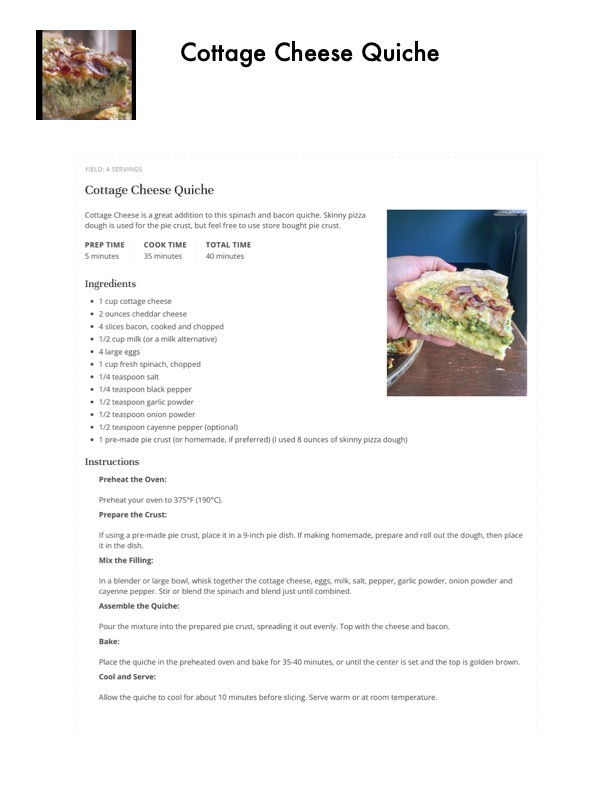

Cottage Cheese Quiche

Original cookbook page 657
Ingredients
- * 1 cup cottage cheese
- 2 ounces cheddar cheese
- 4 slices bacon, cooked and chopped
- 1/2. cup milk (or a milk alternative)
- 4 large eggs
- 1 cup fresh spinach, chopped
- 1/4 teaspoon salt
- 1/4 teaspoon black pepper
- 1/2 teaspoon garlic powder
- 1/2 teaspoon onion powder
- 1/2 teaspoon cayenne pepper (optional)
- * 1 pre-made pie crust (or homemade, if preferred) (I used 8 ounces of skinny pizza dough)
Instructions
- Preheat the Oven: Preheat your oven to 375°F (190°C). Prepare the Crust: fusing a pre-made pie crust, place it in a 9-inch pie dish. If making homemade, prepare and roll out it in the dish Mix the Filling: Ina blender or large bowl, whisk together the cottage cheese, eggs, milk, salt, pepper, garlic powder cayenne pepper. Stir or blend the spinach and blend just until combined. Assemble the Quiche: Pour the mixture into the prepared pie crust, spreading it out evenly. Top with the cheese and bacor Bake: Place the quiche in the preheated oven and bake for 35-40 minutes, or until the center is set and the Cool and Serve: Allow the quiche to cool for about 10 minutes before slicing. Serve warm or at room temperature.
Recipe #657 from collection